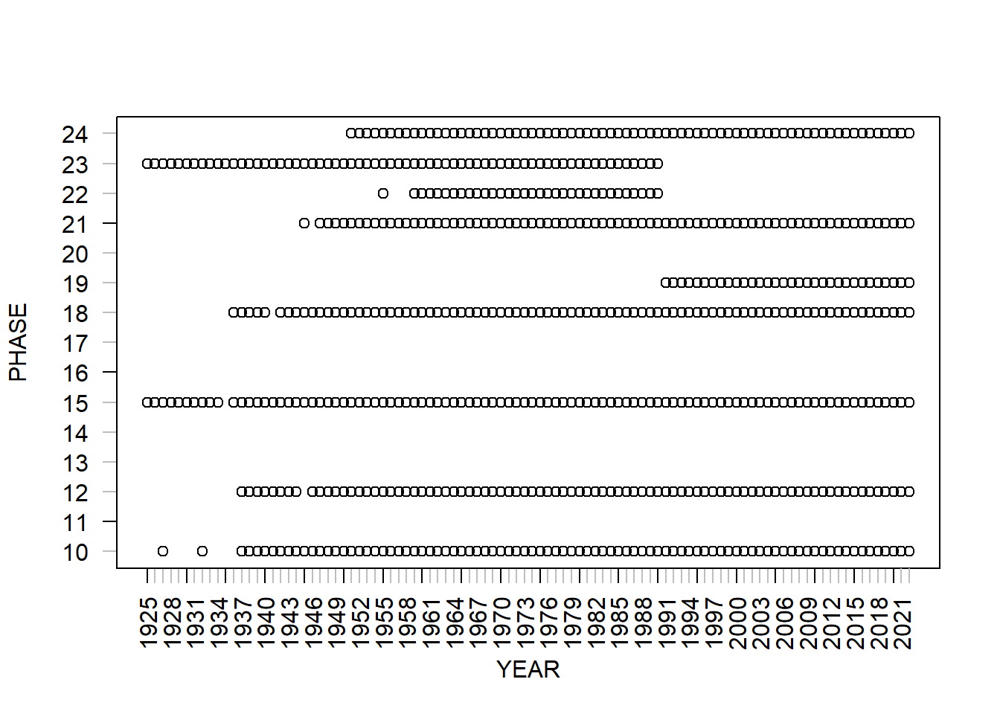
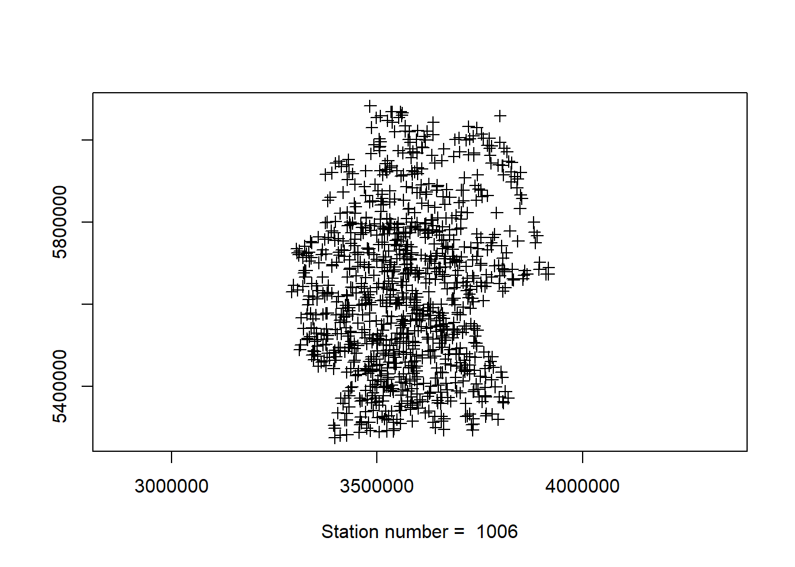
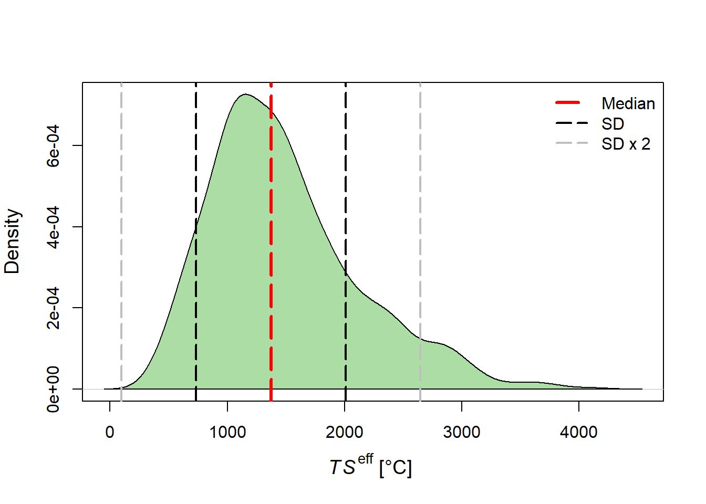
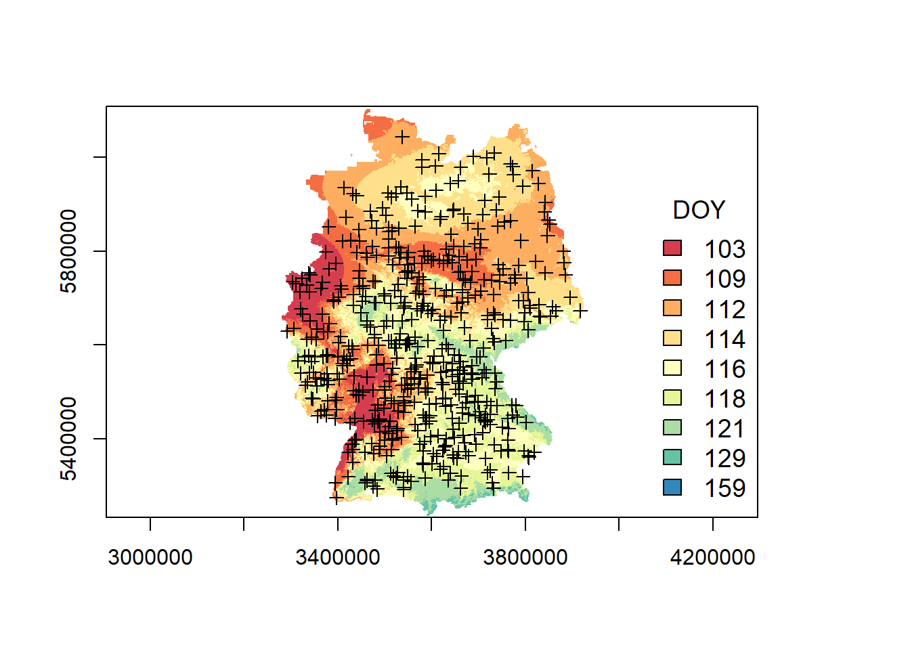
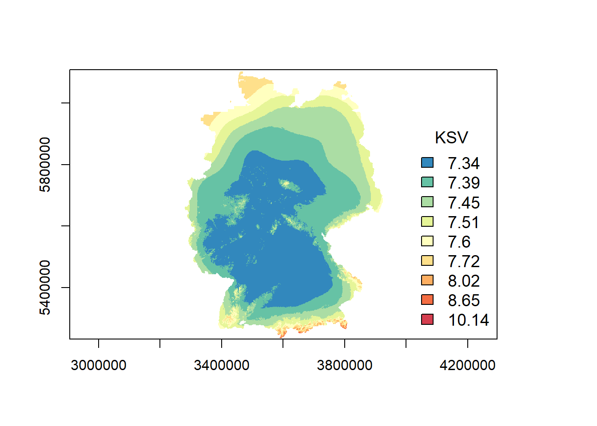

![]()
FUNC.DIR <- #directory containing functions
IN.DIR <- #directory containing input data
OUT.DIR <- #directory for storing output data
YEAR <- 2000
PLANT <- 202
PHASE <- 15This document describes a wrapper R script that runs R functions to download, filter and interpolate Germany-wide phenological observations provided by the German Weather Service (Kaspar, Zimmermann, and Polte-Rudolf 2015). The functions are based on the PHASE model introduced by (gerstmann_phase_2016n?) and is documented in detail on the GitHub repository PhaseR. The dedication of the plant and phase IDs is documented in Möller, Boutarfa, and Strassemeyer (2020). Here, the interpolation is performed using the example of the phenological phase shooting (phase ID = 15) of winter wheat (plant id = 202) for the year 2000.
1 Definition of directories, year, crop type and phases
2 Load/install all required packages
source(file.path(FUNC.DIR,"fLoadAndInstall.R"))
fLoadAndInstall()3 Download and import of phenological observations
In the phenological observation network, annual and immediate reports are distinguished, which is taken into account when executing the function (parameter annual=TRUE). The annual reports are made available after the respective vegetation period, whereby the data set is subjected to a quality control. The immediate reports are available a few days after the observations, but their number is smaller than that of the annual reports. Also, the observed phases are not always identical (Kaspar, Zimmermann, and Polte-Rudolf 2015). Function fDownloadPhenObs downloads all available plant-specific observations. In the download result, the original German column names are transferred into English.
source(file.path(FUNC.DIR,"fDownloadPhenObs.R"))
fDownloadPhenObs(PLANT = PLANT,
URL="ftp://opendata.dwd.de/climate_environment/CDC/observations_germany/phenology/",
IN.DIR,
OUT.DIR,
replace=TRUE,
annual=TRUE)Function fImportPhenObs imports the result of function fDownloadPhenObs. Figure 1 displays the available observations for all years and phases.
source(file.path(FUNC.DIR,"fImportPhenObs.R"))
PHENO.OBS <- fImportPhenObs(OBS.DIR=OUT.DIR,
PLANT = PLANT,
annual=TRUE)
4 Creating spatial data frame of phase- and year-specific phenological observations
The function couples year- and phase-specific observations and corresponding phenological stations. A shapefile of all available phenological stations is related to year- and phase-specific observations (output from function fImportPhenObs). During the coupling operation, the actual observed phase-specific days of the year (DOY) and the corresponding starting DOYs are determined. There are two options to determine starting DOYs (column “DOY_start”):
Summer crops -> DOY_start=1 or
Winter crops -> for spring and summer phases of the current year DOY_start corresponds to the starting DOY of phase 10 observed in previous year.
The OL.RM=TRUE parameter activates an operation that removes outliers using the interquartile range (IQR) criterion.
The functions results in a shapefile of observed phase- and year-specific Germany-wide events (Figure 2). In addition, every file contains the starting DOY, on which the crop-specific vegetation period begins. The start DOY for summer crops can be defined by the user (default value “start.DOY=1”). For winter crops, the start DOY corresponds to the DOY of a user-defined phase of the previous year, with the default value “start.Phase=10” (Table 1).
source(file.path(FUNC.DIR,"fPhaseStation.R"))
PHASE.STATION <- fPhaseStation(PHENO.OBS = PHENO.OBS,
IN.DIR = IN.DIR,
PHENO.STATIONS = "PHENO_STATION_EPSG31467.shp",
PHASE=PHASE,
PLANT=PLANT,
YEAR=YEAR,
start.Phase=10,
start.DOY=1,
OL.RM = TRUE)
| STATION | ID | X | Y | GRID_ID | QL | YEAR | PLANT | PHASE | DATE | QF | DOY | DOY_start | |
|---|---|---|---|---|---|---|---|---|---|---|---|---|---|
| 569 | 10725 | 268938 | 3396415 | 5273501 | 33965273 | 10 | 2000 | 202 | 15 | 20000420 | 1 | 110 | 291 |
| 568 | 10723 | 268976 | 3410415 | 5279501 | 34105279 | 10 | 2000 | 202 | 15 | 20000407 | 1 | 97 | 281 |
| 574 | 10768 | 269201 | 3426415 | 5280501 | 34265280 | 10 | 2000 | 202 | 15 | 20000427 | 1 | 117 | 275 |
| 578 | 10802 | 268105 | 3456415 | 5286501 | 34565286 | 10 | 2000 | 202 | 15 | 20000511 | 1 | 131 | 300 |
| 565 | 10700 | 268439 | 3505415 | 5288501 | 35055288 | 10 | 2000 | 202 | 15 | 20000411 | 1 | 101 | 295 |
| 576 | 10786 | 268538 | 3523415 | 5290501 | 35235290 | 10 | 2000 | 202 | 15 | 20000412 | 1 | 102 | 289 |
5 Import daily temperatures
The function fLoadTemp() imports an interpolated temperature data set for a specific vegetation period. The Germany-wide data set is provided by the German Weather Service. For this application, data of each single year are stored in csv format, which is related to a polygon shape file representing a Germany-wide weather grid:
Column 1: GRID_ID of WEATHER_GRID_EPSG31467.shp and
Columns 2-367: Daily temperatures [°C x 10].
For summer crops, the year-specific temperatures are extracted. For winter crops, the temperatures of the previous year are also considered, starting with the minimum observed DOY of the start phase defined in the function fPhaseStation.Table 2 shows an excerpt of an interpolated temperature data set [°C x 10] for the vegetation period of winter wheat in the year 2000. The first DOY of the starting phase sowing (phase ID = 10) was observed on 19 August 1999 (DOY = 231), which results in the DOY difference 365-261=134 and the corresponding temperatures.
source(file.path(FUNC.DIR,"fLoadTemp.R"))
TEMP.GRID <- fLoadTemp(PHASE.STATION = PHASE.STATION,
IN.DIR=IN.DIR,
PARAMETER = "tmit_",
YEAR)| GRID_ID | T-134 | T-133 | T-132 | T-131 | T-130 | T-129 | T-128 | T-127 | T-126 | T-125 |
|---|---|---|---|---|---|---|---|---|---|---|
| 32805658 | 152 | 157 | 143 | 136 | 165 | 203 | 250 | 204 | 186 | 180 |
| 32805661 | 153 | 158 | 144 | 137 | 166 | 204 | 250 | 205 | 186 | 181 |
| 32815657 | 153 | 157 | 144 | 137 | 165 | 203 | 250 | 204 | 186 | 181 |
| 32815658 | 152 | 157 | 143 | 136 | 165 | 203 | 250 | 204 | 186 | 180 |
| 32815659 | 152 | 157 | 144 | 137 | 165 | 203 | 250 | 204 | 186 | 181 |
| 32815660 | 153 | 157 | 144 | 137 | 165 | 203 | 250 | 205 | 186 | 181 |
6 Calculation of effective temperatures
For a specific vegetation period and phase, function fTeffSum() couples the phenological observations and daily mean temperatures (\(T\)). While a vegetation period of summer crops only considers the year of interest, a vegetation period of winter crops starts in the previous year on the DOY of sowing. During the temperature summation (Equation 1), plant-specific base temperatures are subtracted (\(T_B\)), negative temperatures are deleted and the remaining temperature values are weighted by a day length factor (\(DL\)). For every phase- and year-specific station, the effective temperatures (\(TS^{eff}\)) are then accumulated (Table 3). Figure 3 displays a \(TS^{eff}\) density plot for the phenological observations of the winter wheat phase shooting in the year 2000.
\[ TS^{eff} = \Sigma_{i=DOY_{start}}^{DOY_{obs}}\left((T-T_B)\times \dfrac{DL_i}{24}\right) \tag{1}\]
Figure 3 shows the median and the 0.5 quantile (= median) of the value distribution as well as the limits of the single and double standard deviation (SD) for the example of the winter wheat phase shooting.
source(file.path(FUNC.DIR,"fTeffSum.R"))
TEMP.PHENO <- fTeffSum(TEMP.GRID=TEMP.GRID,
PHASE.STATION=PHASE.STATION,
T.BASE = TRUE)| GRID_ID | LON | LAT | STATION | ID | YEAR | PLANT | PHASE | DATE | DOY | DOY_start | T_SUMS | |
|---|---|---|---|---|---|---|---|---|---|---|---|---|
| 96 | 33965273 | 7.631053 | 47.59795 | 10725 | 1 | 2000 | 202 | 15 | 20000420 | 110 | -75 | 1168.7743 |
| 118 | 34105279 | 7.815999 | 47.65399 | 10723 | 2 | 2000 | 202 | 15 | 20000407 | 97 | -85 | 869.0156 |
| 143 | 34265280 | 8.028835 | 47.66499 | 10768 | 3 | 2000 | 202 | 15 | 20000427 | 117 | -91 | 697.0389 |
| 207 | 34565286 | 8.427745 | 47.72165 | 10802 | 4 | 2000 | 202 | 15 | 20000511 | 131 | -66 | 2063.5872 |
| 319 | 35055288 | 9.081043 | 47.74104 | 10700 | 5 | 2000 | 202 | 15 | 20000411 | 101 | -71 | 663.9686 |
| 374 | 35235290 | 9.321216 | 47.75862 | 10786 | 6 | 2000 | 202 | 15 | 20000412 | 102 | -77 | 757.0679 |

7 Derivation and assessment of critical effective temperature variants
The function fDoyCrit filters the phase- and year-specific distribution of effective temperatures in a two-stage procedure. First, quantiles (\(Q\)) of effective temperature sums (\(TS^{eff}\)) are calculated (Equation 2). The resulting critical effective temperature sums (\(TS^{crit}\)) are used to determine the station- and phase-specific DOY (\(DOY^P\)) when the condition \(TS^{eff} \geq TS^{crit}\) is fulfilled. Afterwards, the remaining \(TS^{eff}\) distribution is statistically filtered using standard deviation variants.
\[ TS^{crit}=Q(TS^{eff}) \tag{2}\]
For each variant, \(DOY^P\) and observed DOY values (\(DOY^{obs}\)) are compared by calculating the Pearson correlation coefficient (COR), Root Mean Square Error (RMSE), and Mean Absolute Error (MAE). By applying the function fFilterAssessment(), the optimal filtered observation variant (\(O^{opt}\)) results from the maximum value of the product of station number (\(SN\)) and \(COR\) value. Optionally, the \(MAE\) value can also be taken into account (Equation 3).
\[ O^{opt} = \dfrac{SN \times COR}{(MAE)} \tag{3}\]
FILTER <- seq(1,3,0.5)
for (F.STD in FILTER) {
source(file.path(FUNC.DIR,"fDoyCrit.R"))
TEMP.PHENO.DOY <- fDoyCrit(TEMP.PHENO=TEMP.PHENO,
OUT.DIR,
F.STD=F.STD,
Q1=0.3,
Q2=0.7)
}source(file.path(FUNC.DIR,"fFilterAssessment.R"))
fFilterAssessment(IN.DIR=OUT.DIR,
PLANT,
PHASES=PHASE,
YEARS=YEAR,
MAE=FALSE)Table 4 shows the assessment results for the winter wheat phase shooting in 2000. According to this, the variant with \(Q=0.45\) and \(F.STD=1\) proved to be optimal (fourth line). It is worth mentioning that the number of stations with \(SN=565\) is significantly smaller than the original number of observations (Figure 2), where especially the standard deviation has the greatest filtering effect.
| Q | RMSE | MAE | SN | COR | YEAR | STD | PLANT | PHASE | OPT |
|---|---|---|---|---|---|---|---|---|---|
| 0.30 | 6.0 | 5.1 | 509 | 0.75 | 2000 | 1.0 | 202 | 15 | 379 |
| 0.35 | 5.9 | 5.0 | 524 | 0.73 | 2000 | 1.0 | 202 | 15 | 383 |
| 0.40 | 5.9 | 4.9 | 546 | 0.71 | 2000 | 1.0 | 202 | 15 | 387 |
| 0.45 | 5.9 | 5.0 | 565 | 0.72 | 2000 | 1.0 | 202 | 15 | 405 |
| 0.50 | 5.9 | 4.9 | 566 | 0.71 | 2000 | 1.0 | 202 | 15 | 402 |
| 0.55 | 5.9 | 4.9 | 564 | 0.71 | 2000 | 1.0 | 202 | 15 | 402 |
| 0.60 | 6.1 | 5.2 | 564 | 0.69 | 2000 | 1.0 | 202 | 15 | 388 |
| 0.65 | 6.3 | 5.3 | 556 | 0.71 | 2000 | 1.0 | 202 | 15 | 396 |
| 0.70 | 6.5 | 5.7 | 535 | 0.68 | 2000 | 1.0 | 202 | 15 | 363 |
| 0.30 | 8.5 | 7.0 | 650 | 0.59 | 2000 | 1.5 | 202 | 15 | 383 |
| 0.35 | 8.5 | 7.0 | 673 | 0.57 | 2000 | 1.5 | 202 | 15 | 385 |
| 0.40 | 8.5 | 7.0 | 699 | 0.54 | 2000 | 1.5 | 202 | 15 | 380 |
| 0.45 | 8.5 | 6.9 | 713 | 0.54 | 2000 | 1.5 | 202 | 15 | 387 |
| 0.50 | 8.4 | 6.9 | 717 | 0.53 | 2000 | 1.5 | 202 | 15 | 381 |
| 0.55 | 8.5 | 7.0 | 724 | 0.55 | 2000 | 1.5 | 202 | 15 | 395 |
| 0.60 | 8.7 | 7.2 | 726 | 0.53 | 2000 | 1.5 | 202 | 15 | 384 |
| 0.65 | 8.9 | 7.4 | 723 | 0.53 | 2000 | 1.5 | 202 | 15 | 387 |
| 0.70 | 9.3 | 7.9 | 721 | 0.49 | 2000 | 1.5 | 202 | 15 | 351 |
| 0.30 | 10.2 | 8.3 | 720 | 0.48 | 2000 | 2.0 | 202 | 15 | 342 |
| 0.35 | 10.5 | 8.4 | 755 | 0.45 | 2000 | 2.0 | 202 | 15 | 341 |
| 0.40 | 10.3 | 8.3 | 779 | 0.45 | 2000 | 2.0 | 202 | 15 | 347 |
| 0.45 | 10.4 | 8.3 | 795 | 0.44 | 2000 | 2.0 | 202 | 15 | 348 |
| 0.50 | 10.6 | 8.6 | 819 | 0.41 | 2000 | 2.0 | 202 | 15 | 339 |
| 0.55 | 10.8 | 8.8 | 837 | 0.41 | 2000 | 2.0 | 202 | 15 | 345 |
| 0.60 | 11.0 | 9.0 | 843 | 0.40 | 2000 | 2.0 | 202 | 15 | 340 |
| 0.65 | 11.4 | 9.4 | 854 | 0.38 | 2000 | 2.0 | 202 | 15 | 327 |
| 0.70 | 11.6 | 9.7 | 844 | 0.38 | 2000 | 2.0 | 202 | 15 | 324 |
| 0.30 | 12.0 | 9.5 | 770 | 0.39 | 2000 | 2.5 | 202 | 15 | 299 |
| 0.35 | 12.0 | 9.5 | 802 | 0.37 | 2000 | 2.5 | 202 | 15 | 296 |
| 0.40 | 11.6 | 9.2 | 819 | 0.37 | 2000 | 2.5 | 202 | 15 | 306 |
| 0.45 | 11.9 | 9.3 | 842 | 0.34 | 2000 | 2.5 | 202 | 15 | 286 |
| 0.50 | 11.9 | 9.4 | 862 | 0.36 | 2000 | 2.5 | 202 | 15 | 311 |
| 0.55 | 12.1 | 9.6 | 881 | 0.34 | 2000 | 2.5 | 202 | 15 | 304 |
| 0.60 | 12.4 | 10.0 | 895 | 0.32 | 2000 | 2.5 | 202 | 15 | 284 |
| 0.65 | 12.7 | 10.3 | 904 | 0.32 | 2000 | 2.5 | 202 | 15 | 292 |
| 0.70 | 13.2 | 10.9 | 911 | 0.30 | 2000 | 2.5 | 202 | 15 | 271 |
| 0.30 | 12.9 | 10.1 | 792 | 0.34 | 2000 | 3.0 | 202 | 15 | 272 |
| 0.35 | 12.8 | 10.0 | 819 | 0.32 | 2000 | 3.0 | 202 | 15 | 266 |
| 0.40 | 12.3 | 9.6 | 834 | 0.32 | 2000 | 3.0 | 202 | 15 | 270 |
| 0.45 | 12.6 | 9.8 | 859 | 0.31 | 2000 | 3.0 | 202 | 15 | 266 |
| 0.50 | 12.8 | 10.0 | 884 | 0.31 | 2000 | 3.0 | 202 | 15 | 271 |
| 0.55 | 13.0 | 10.2 | 904 | 0.28 | 2000 | 3.0 | 202 | 15 | 256 |
| 0.60 | 13.4 | 10.6 | 919 | 0.26 | 2000 | 3.0 | 202 | 15 | 238 |
| 0.65 | 13.8 | 11.0 | 933 | 0.25 | 2000 | 3.0 | 202 | 15 | 237 |
| 0.70 | 14.1 | 11.5 | 936 | 0.26 | 2000 | 3.0 | 202 | 15 | 243 |
8 Extract and interpolate optimal observation variant
The function fOptShp() extracts the optimal phenological observation variant as a result of the function fFilterAssessment(), which is then interpolated by applying a SPLINE or KRIGE algorithm (function fPhaseInterpolation()). In addition, external validation is performed and global accuracy metrics and optionally (parameter SPACC) a spatial accuracy data set are derived.
source(file.path(FUNC.DIR,"fOptShp.R"))
fOptShp(SHP.DIR=OUT.DIR,
OPT.DIR=OUT.DIR,
OUT.DIR=OUT.DIR,
PLANT,
PHASE)source(file.path(FUNC.DIR,"fPhaseInterpolation.R"))
fPhaseInterpolation(PLANT,
PHASE,
YEAR,
SHP.EPSG = 31467,
SHP.DIR = OUT.DIR,
DEM.DIR = IN.DIR,
DEM.GRID = "DGM1000_EPSG31467.asc",
DEM.EPSG = 31467,
OUT.DIR = OUT.DIR,
KRIGE = TRUE,
SPLINE = FALSE,
VALIDATION = TRUE,
SPACC = TRUE)Figure 4 and Figure 5 displays the interpolated optimal phenological observation variant and the corresponding spatial accuracy (here: Kriging Standard Variation) for the winter wheat phase shooting in the year 2000. ?@tbl-Interpolation-VAM shows the external accuracy metrics.
[1] "Automatic creation of maps"[1] "Reproject raster file"

References
Kaspar, F., K. Zimmermann, and C. Polte-Rudolf. 2015. “An Overview of the Phenological Observation Network and the Phenological Database of Germany’s National Meteorological Service (Deutscher Wetterdienst).” Advances in Science and Research 11 (1): 93–99. https://doi.org/10.5194/asr-11-93-2014.
Möller, Markus, Lucas Boutarfa, and Jörn Strassemeyer. 2020. “PhenoWin – An R Shiny Application for Visualization and Extraction of Phenological Windows in Germany.” Computers and Electronics in Agriculture 175 (August): 105534. https://doi.org/10.1016/j.compag.2020.105534.